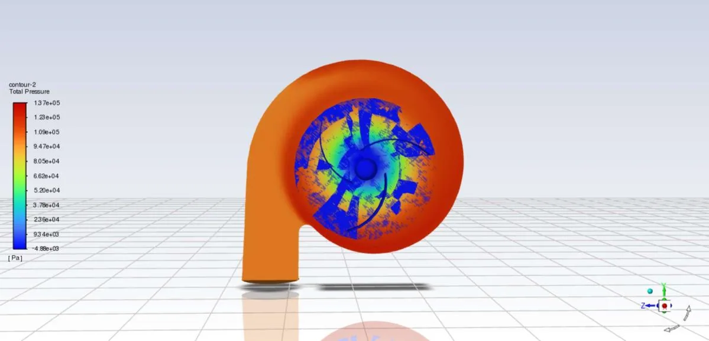
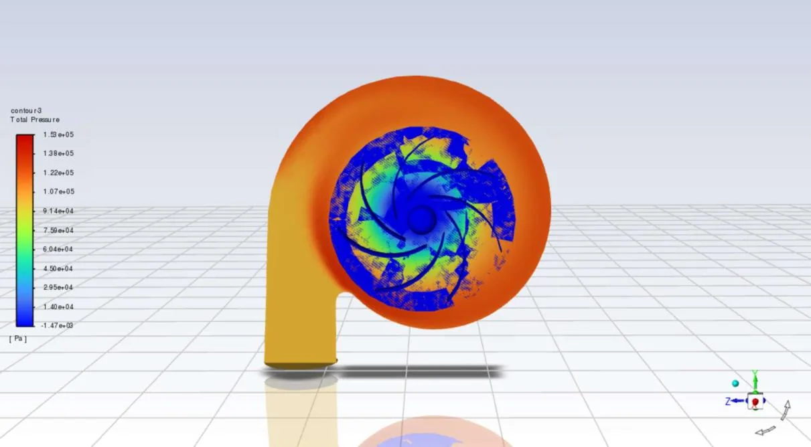

Turbomachinery & CFD · Fluid Track
CFD Investigation of Impeller Blade Number Effects on a Centrifugal Turbopump
Incompressible Turbomachines · University of Tehran
View Full Report (PDF)Download PDF
Project Overview
A CFD-based assessment of how the number of impeller blades influences the hydraulic behavior of a centrifugal turbopump in three geometric configurations.
Engineering tools and methods: ANSYS Fluent, SpaceClaim, ANSYS Meshing, MATLAB.
Methodology
Modeling and formulation
Prepared pump and impeller geometries in ANSYS SpaceClaim.
Numerical implementation
Generated computational meshes using ANSYS Meshing.
Analysis and comparison
Applied a standard k–ε turbulence model and SIMPLEC coupling in ANSYS Fluent.
Interpretation and reporting
Compared computed outlet flow rates and selected flow-field contours.
Selected Findings and Scope
| Item | Reported result or scope |
|---|---|
| Impeller blade counts | 3, 5 and 7 blades. |
| Rotational speed | 1,450 rpm. |
| Outlet flow, 3 blades | 0.741 L/s reported. |
| Outlet flow, 5 and 7 blades | 0.569 L/s and 0.507 L/s, respectively. |
| Interpretive limitation | A reported pump-head inconsistency and incomplete residual reductions require caution. |
The findings above reproduce values and limits stated in the submitted project report. They are reported numerical or design outputs unless explicitly noted otherwise; the full PDF should be consulted for model assumptions and details.
Figures from the Report



Complete Course Project Report
The full 23-page report includes the original technical formulation, calculations, figures, results and the references provided with the submitted course project.
Open Full Report (PDF)Download PDF
The public project copy has text-searchable student registration numbers removed where present; scientific content has not been rewritten.